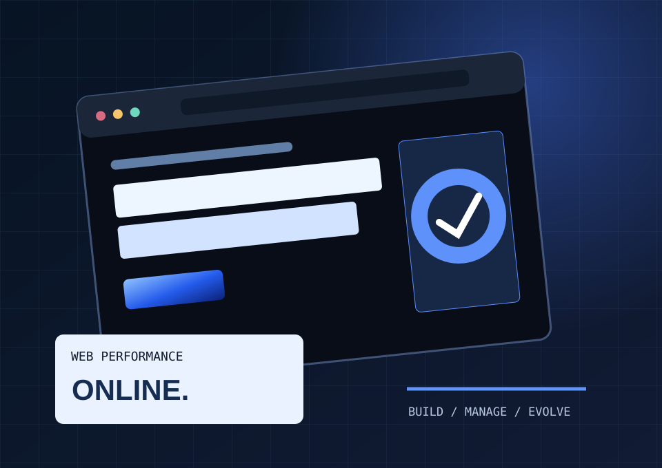

IT / NETWORKS · Doświadczenie zawodowe
Konfiguracje i uruchomienia sieci
Współpraca z Systemia: infrastruktura, wywiady techniczne, światłowody, uruchomienia i diagnostyka.
Ilustracja demonstracyjna — docelowo zastąpiona prawdziwymi materiałamiWybrane doświadczenia zawodowe i obszary kompetencji. Właściwe zdjęcia i zaakceptowane case studies uzupełnimy przed publikacją.
To wersja demonstracyjna strony. Treści opierają się na doświadczeniu opisanym w CV i w zakresie aktualnej współpracy. Ilustracje nie przedstawiają konkretnych realizacji.
Współpraca z Systemia: infrastruktura, wywiady techniczne, światłowody, uruchomienia i diagnostyka.
Ilustracja demonstracyjna — docelowo zastąpiona prawdziwymi materiałami
Doświadczenie w Media Teamie Warty Poznań: fotografia meczowa i materiały do komunikacji.
Ilustracja demonstracyjna — docelowo zastąpiona prawdziwymi materiałami
WordPress, hosting, poczta i utrzymanie usług internetowych — zakres wykonywany przy pracy klubowej.
Ilustracja demonstracyjna — docelowo zastąpiona prawdziwymi materiałami
Doświadczenie kierownika ds. bezpieczeństwa: procedury, koordynacja służb, kontrola dostępu.
Ilustracja demonstracyjna — docelowo zastąpiona prawdziwymi materiałamiPrzed oficjalną publikacją: pozyskać zgodę na wykorzystanie nazw klientów, zdjęć, znaków towarowych i ewentualnych parametrów projektów.
Zdjęcia pogrupowane według rodzaju realizacji. Każdą kolekcję można otworzyć i przeglądać osobno.
Opowiedz o problemie lub pomyśle. Zaproponuję zakres i sposób działania.
Napisz do mnie